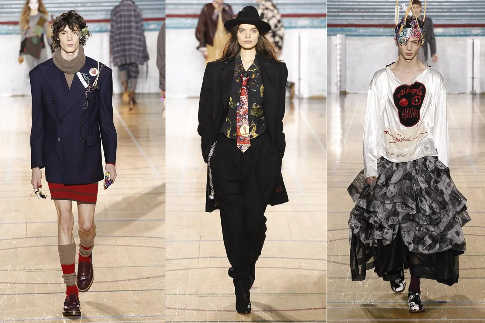

Unisex
Vivienne Westwood fue una visionaria que concibió la ropa unisex como una herramienta de deconstrucción social y política, consolidando un legado de diseño sin género que se mantuvo firme durante más de cincuenta años de trayectoria. En su universo creativo, las prendas nunca fueron concebidas bajo la premisa de complacer las expectativas anatómicas o los roles tradicionales impuestos por el binarismo. Al contrario, sus colecciones se estructuraron a partir de siluetas mutables, patronajes asimétricos y técnicas de sastrería histórica subvertida que buscan adaptarse a la actitud y la expresión del individuo, sin importar su identidad. Este enfoque radical no se limitó a una línea experimental, sino que transformó la estructura misma de la casa de moda, la cual terminó por unificar sus desfiles comerciales en pasarelas mixtas donde los sacos estructurados, las camisas holgadas, las faldas masculinas y los pantalones utilitarios se presentaban como un manifiesto de libertad y resistencia frente a los estándares de la industria textil global.La base técnica de sus prendas unisex radica en un profundo conocimiento del vestuario histórico combinado con la sastrería clásica de Savile Row. A través de la manipulación de los tejidos, se crearon abrigos envolventes con caídas fluidas, pantalones con cinturas ajustables mediante cordones o hebillas, y remeras oversized con cortes geométricos que ignoran deliberadamente las divisiones convencionales de sisa y hombros. Esta fluidez textil permite que un mismo saco de lana con solapas exageradas o una camisa de estética pirata con volados dramáticos adquieran intenciones completamente distintas según el cuerpo que los porte. La propuesta unisex se consolidó de manera definitiva a través de la línea permanente de su tienda histórica londinense, un espacio dedicado exclusivamente al diseño libre de etiquetas de género donde conviven desde los icónicos pantalones bondage con correas cruzadas hasta las camisetas con consignas activistas y los tradicionales kilts escoceses. Al integrar estas piezas en un mismo catálogo, la firma demostró que los elementos tradicionalmente considerados masculinos o femeninos podían fusionarse en un guardarropa comunitario, transformando la vestimenta en un lenguaje universal de rebelión estética.
